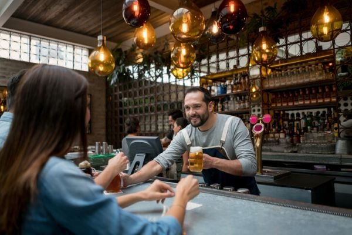
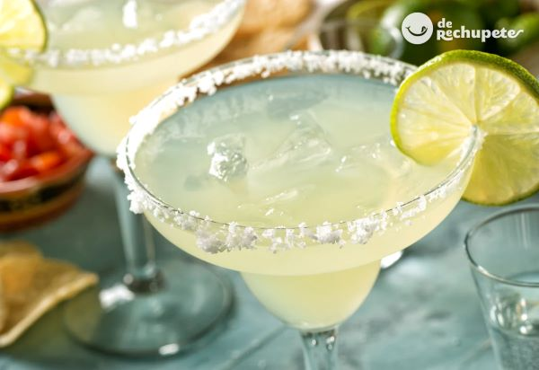
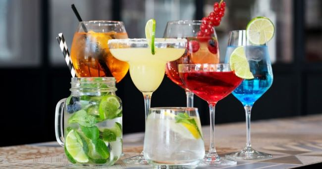
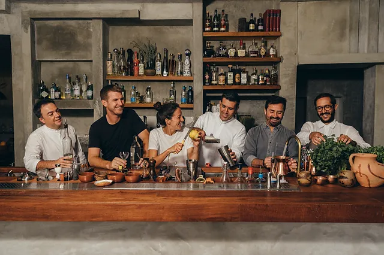

desde mucho tiempo nuestra familia se a dedicado en satisfacer a los clientes y darles el mejor servicio y un a buena bebida
En nuestra bartendaría, cada cóctel es una obra maestra. Conoce nuestra filosofía de creatividad y pasión por la mixología.
conoce las creaciones de los clientes cada nuevo coctel que pide un cliente es el mayor gusto para nosotros
Participamos y invitamos a la gente en los eventos de cocteles que realizamos todos los viernes a las 5pm
